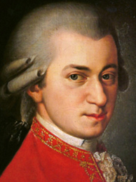

He composed more than 600 works, many acknowledged as pinnacles of symphonic, concertante, chamber, operatic, and choral music. He is among the most enduringly popular of classical composers, and his influence is profound on subsequent Western art music. Ludwig van Beethoven composed his own early works in the shadow of Mozart, and Joseph Haydn wrote: "posterity will not see such a talent again in 100 years".